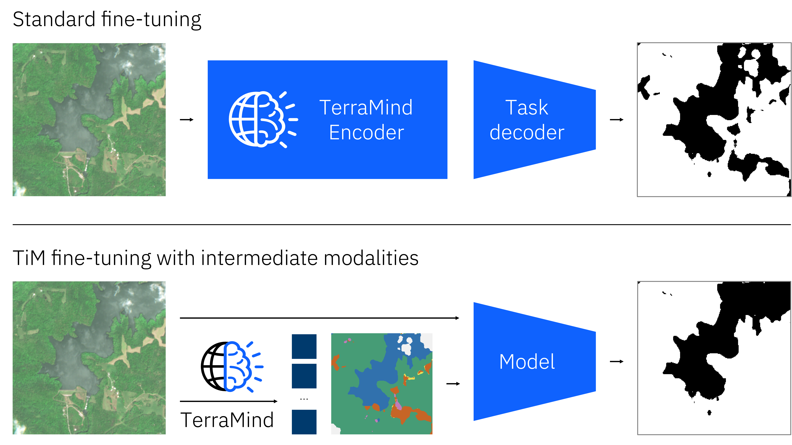

TerraMind: Large-Scale Generative Multimodality for Earth Observation
TerraMind: Large-Scale Generative Multimodality for Earth Observation
Meet TerraMind, the first any-to-any generative, multimodal foundation model for Earth observation. TerraMind represents new levels of understanding geospatial data, introduces new capabilities such as Thinking-in-Modalities (TiM), and outperforms existing models significantly across community-standard benchmarks.
Try it out on HuggingFace
Find our arXiv preprint
Learn more about the TerraMesh dataset
Find code for finetuning on GitHub
üí° How does TerraMind work?
TerraMind is pretrained on dual-scale representations combining both token-level and pixel-level data across modalities. On a token level, TerraMind encodes high-level contextual information to learn cross-modal relationships, while on a pixel level, TerraMind leverages fine-grained representations to capture critical spatial nuances.

TerraMind leverages autoencoder-based architectures with a quantization step in the bottleneck for imagelike modalities such as Sentinel-1, Sentinel-2, LULC, NDVI, and DEM. Tokenizer encoders process an input image and generate a latent representation for each 16×16 patch, which is then discretized with finite-scalar-quantization (FSQ) into one of N codewords.

üöÄ How does TerraMind compare to other models?
TerraMind was benchmarked by ESA in both unimodal and multimodal settings following the community-standard PANGAEA benchmark. Overall, TerraMindv1-B outperforms all other GeoFMs by at least 3pp avg. mIoU. Importantly, TerraMind is the only foundation model approach in EO that outperforms task-specific U-Net models across the PANGAEA benchmark. Performance is approximately 2pp avg. mIoU higher for Terramindv1-L, with a peak of 5pp in multimodal datasets.
 "To me, what sets TerraMind apart is its ability to go beyond simply processing earth observations with computer vision algorithms. It instead has an intuitive understanding of geospatial data and our planet" said Juan Bernabé-Moreno, director of IBM Research UK and Ireland, and IBM's Accelerated Discovery lead for climate and sustainability. "At present, TerraMind is the best performing AI foundation model for Earth observation according to well-established community-benchmarks" Bernabé-Moreno added.
"To me, what sets TerraMind apart is its ability to go beyond simply processing earth observations with computer vision algorithms. It instead has an intuitive understanding of geospatial data and our planet" said Juan Bernabé-Moreno, director of IBM Research UK and Ireland, and IBM's Accelerated Discovery lead for climate and sustainability. "At present, TerraMind is the best performing AI foundation model for Earth observation according to well-established community-benchmarks" Bernabé-Moreno added.
"TerraMind combines insights from several modalities of training data to increase the accuracy of its outputs" said Simonetta Cheli, director of ESA Earth Observation Programmes and Head of ESRIN. "The ability to intuitively bring in contextual information and generate unseen scenarios is a critical step in unlocking the value of ESA data. Compared to competitive models, it can uncover a deeper understanding of the Earth for researchers and businesses alike."
üí≠ What is Thinking-in-Modalities?
During fine-tuning or inference, TerraMind can pause for a moment, imagine a helpful but absent layer, append the imagined tokens to its own input sequence, and then lets the fine-tuned encoder continue to improve its own performance. Because the imagination lives in token space, the approach avoids the heavy diffusion decoding that full image synthesis would require. So, TerraMind can generate any missing modality as an intermediate step — an ability we call Thinking in Modalities (TiM).
"TiM tuning boosts data efficiency by self-generating the additional training data relevant to the problem being addressed — for example, by telling the model to "think" about land cover when mapping water bodies. This breakthrough can unlock unprecedented accuracy when specializing TerraMind for particular use cases" said Johannes Jakubik, an IBM Research scientist based in Zurich.
⭐️ Exploring the embedding space via one-shot classification

TerraMind is pretrained on a cross-modal patch classification objective. Empirical results suggest that this results in a well-structured latent space that clusters different concepts accurately. To investigate this hypothesis, we apply 1-Nearest-Neighbor (1-NN) classification without applying any kind of weight updates. TerraMind outperforms other models significantly, pointing to a better structured embedding space.
üèÜ Need a challenge?
Find out more about our TerraMind Blue-Sky challenge here and the associated 1'000 EUR cash prizes.
üìΩÔ∏è Voices on TerraMind
"With Earth observation science, technology, and international collaboration, we are unlocking the full potential of space-based data to protect our planet" said Nicolas Longepe, Earth Observation Data Scientist at ESA. "This project is a perfect example where the scientific community, big tech companies, and experts have collaborated to leverage this technology for the benefit of Earth sciences. The magic happens when earth observation data experts, machine learning experts, data scientists, and HPC engineers come together."